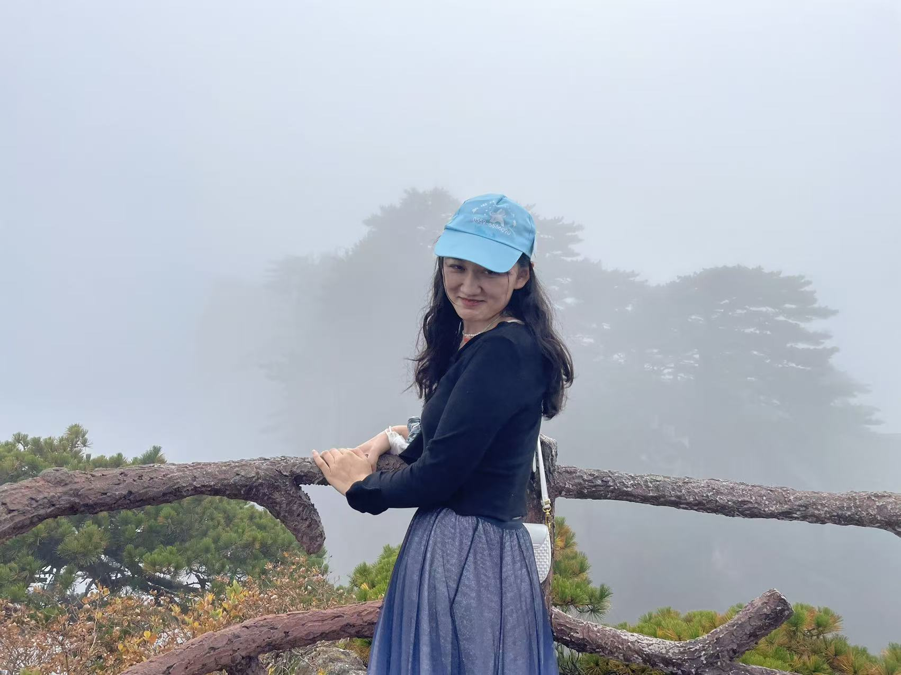
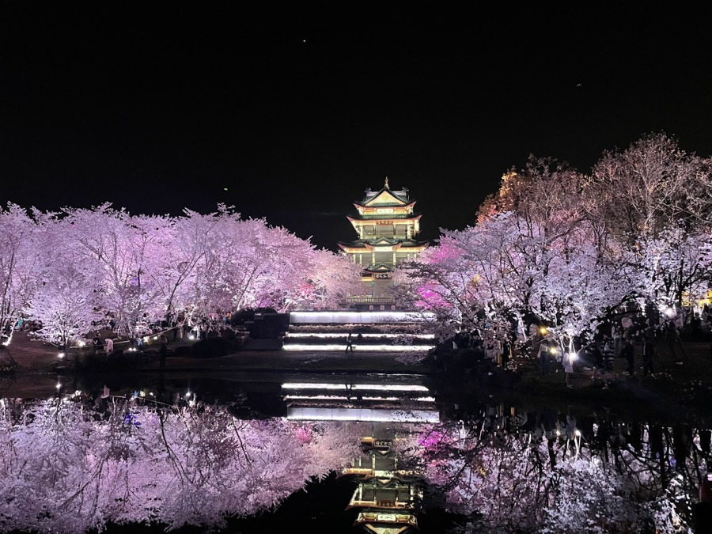
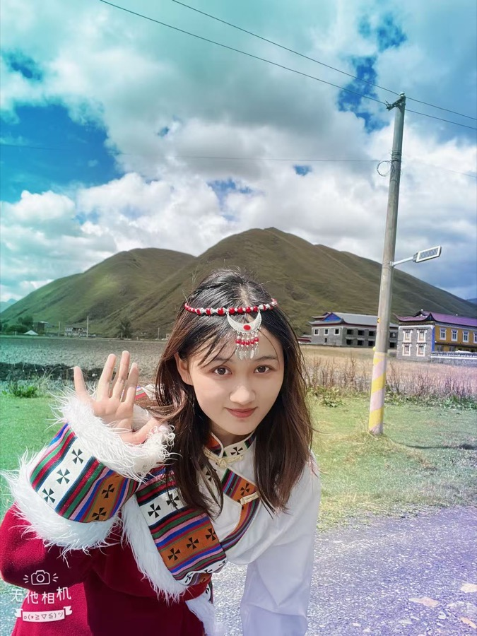
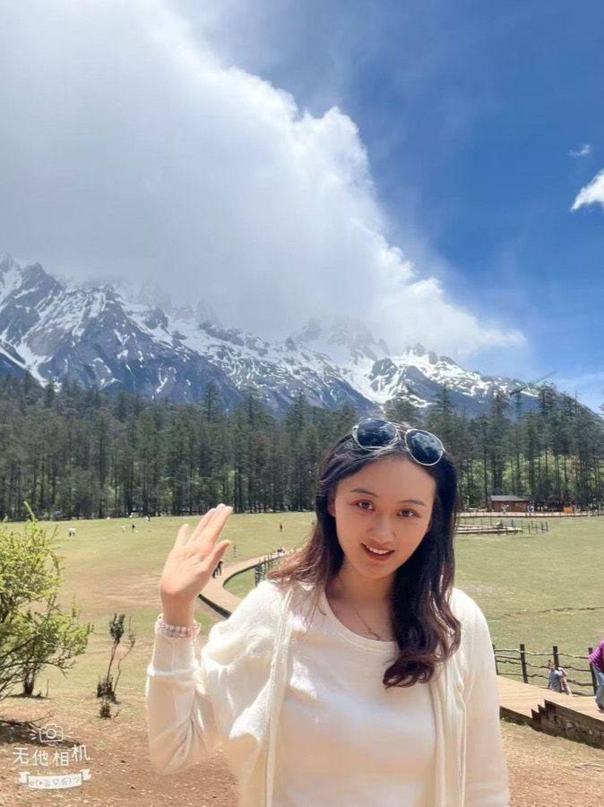
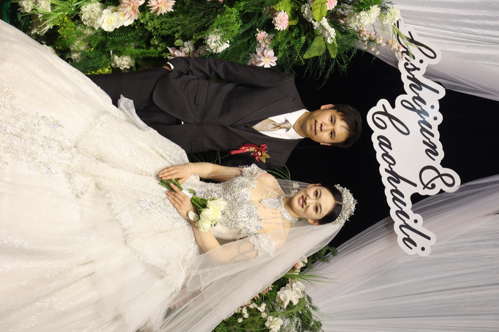
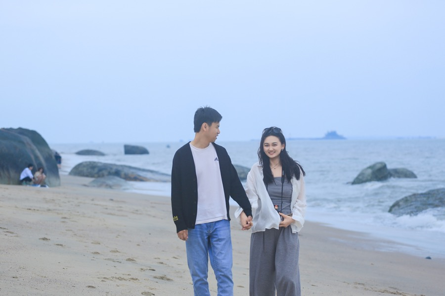

Wechat Video
Our Story
从相遇到婚礼
2022.8.06
第一次相遇
一场普通的晚餐，变成了两个人共同生活的开头。

2022.10
黄山
山路、云海和并肩走过的台阶，成为后来反复想起的风景。
2023.06
舟山
海风吹过节日的假期，也把两个人的脚步吹向更远的地方。

2024.03
无锡鼋头渚
樱花开得正好，湖边的春天被悄悄收进了合照里。
2024.05
青岛
沿着海岸散步，在啤酒、落日和浪声里留下轻松的夏日前奏。

2024.10
川西
高原、雪山和长路，把陪伴这件事变得更清楚也更坚定。
2025.02
订婚
把未来认真说出口，从这一天开始，有了更具体的约定。

2025.05
云南
在风花雪月的路上，把日常走成了一段柔软的旅行。

2026.2.13
婚礼当天
亲友围坐，灯光亮起，所有心意都落在一句“我愿意”里。

2026.05
福建
婚礼之后继续出发，把新的生活写进山海之间。